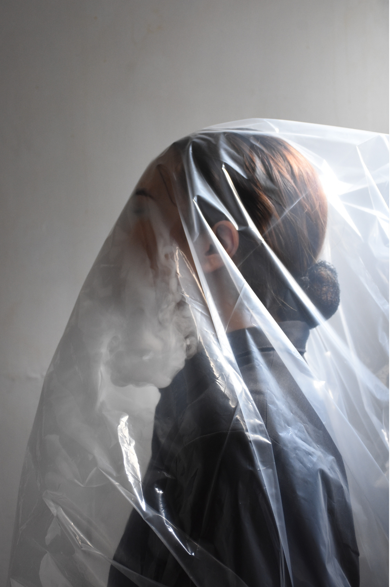
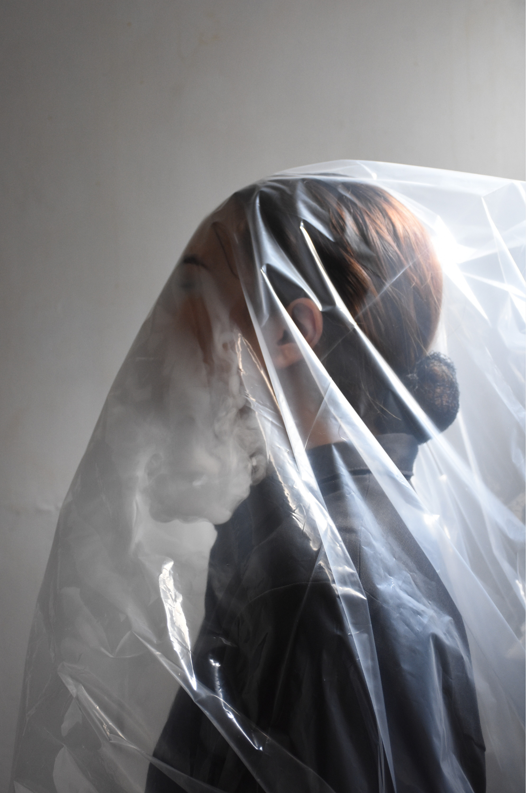
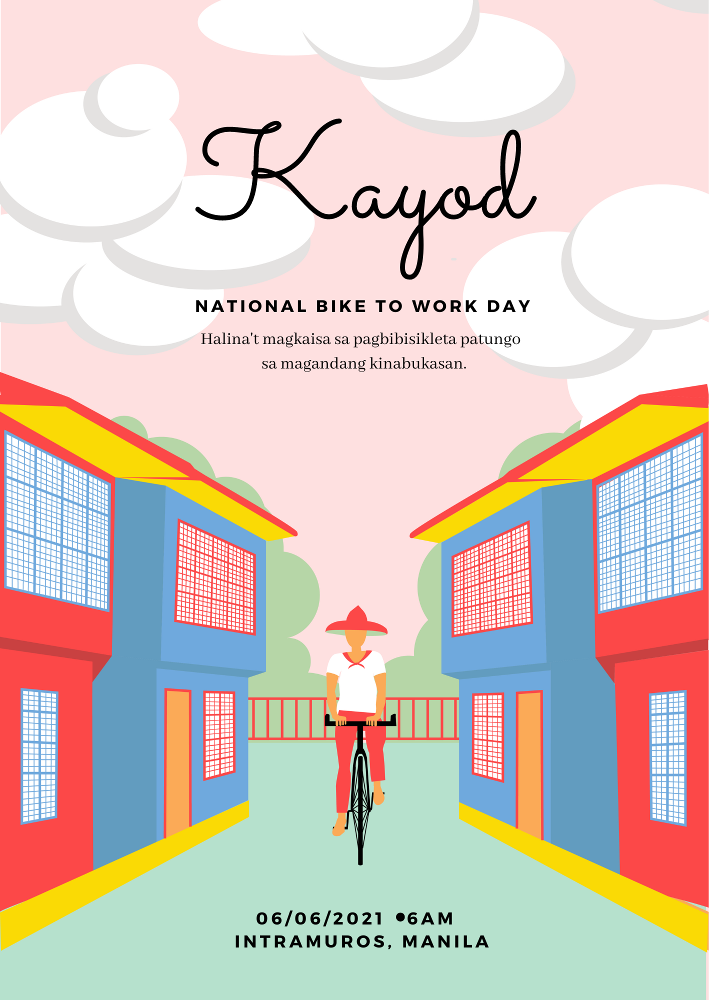
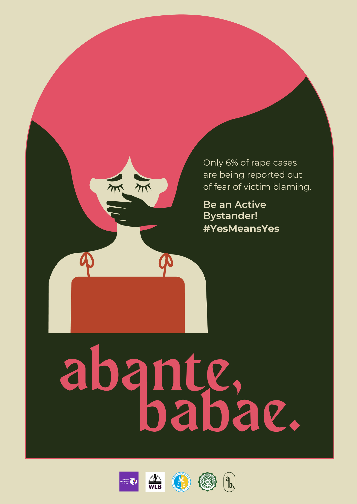
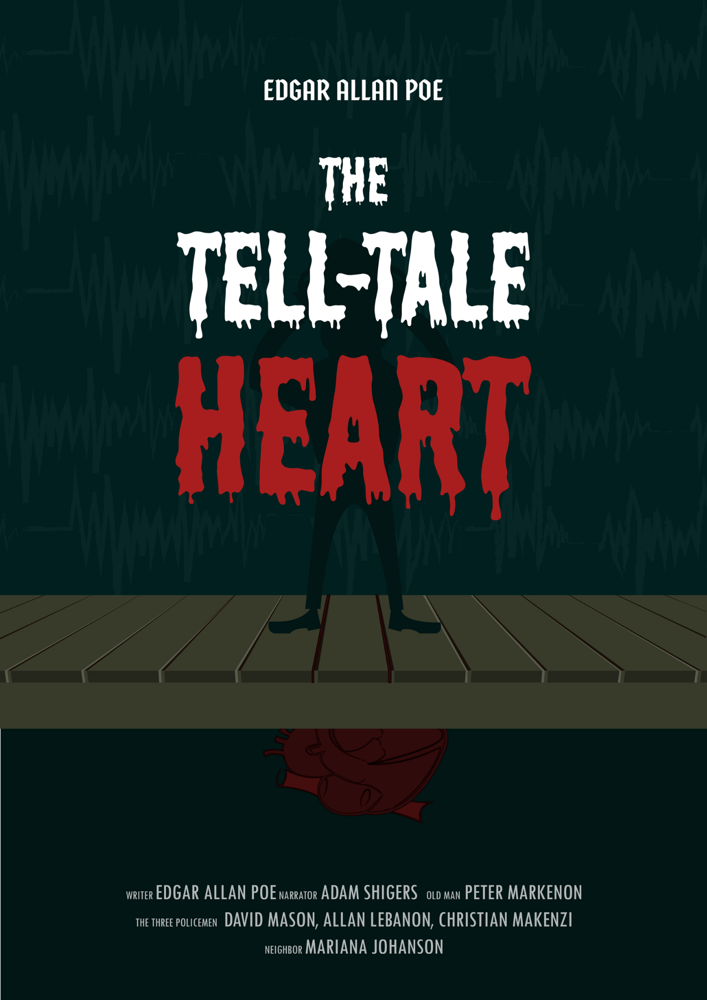
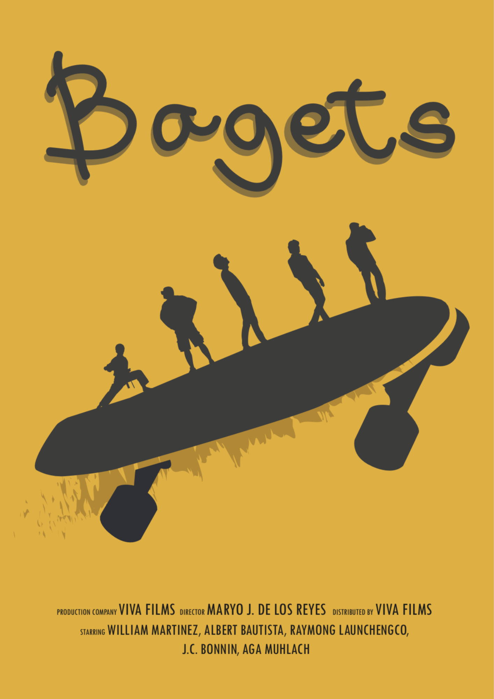
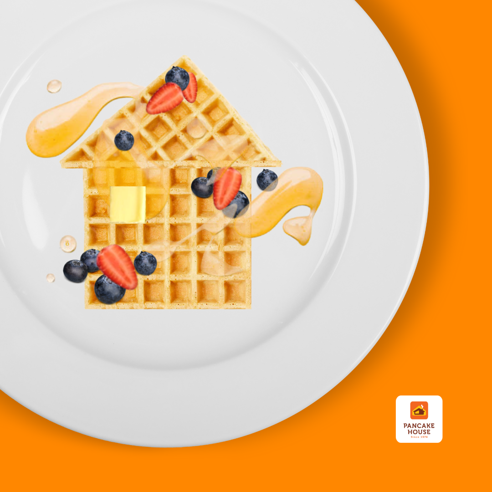
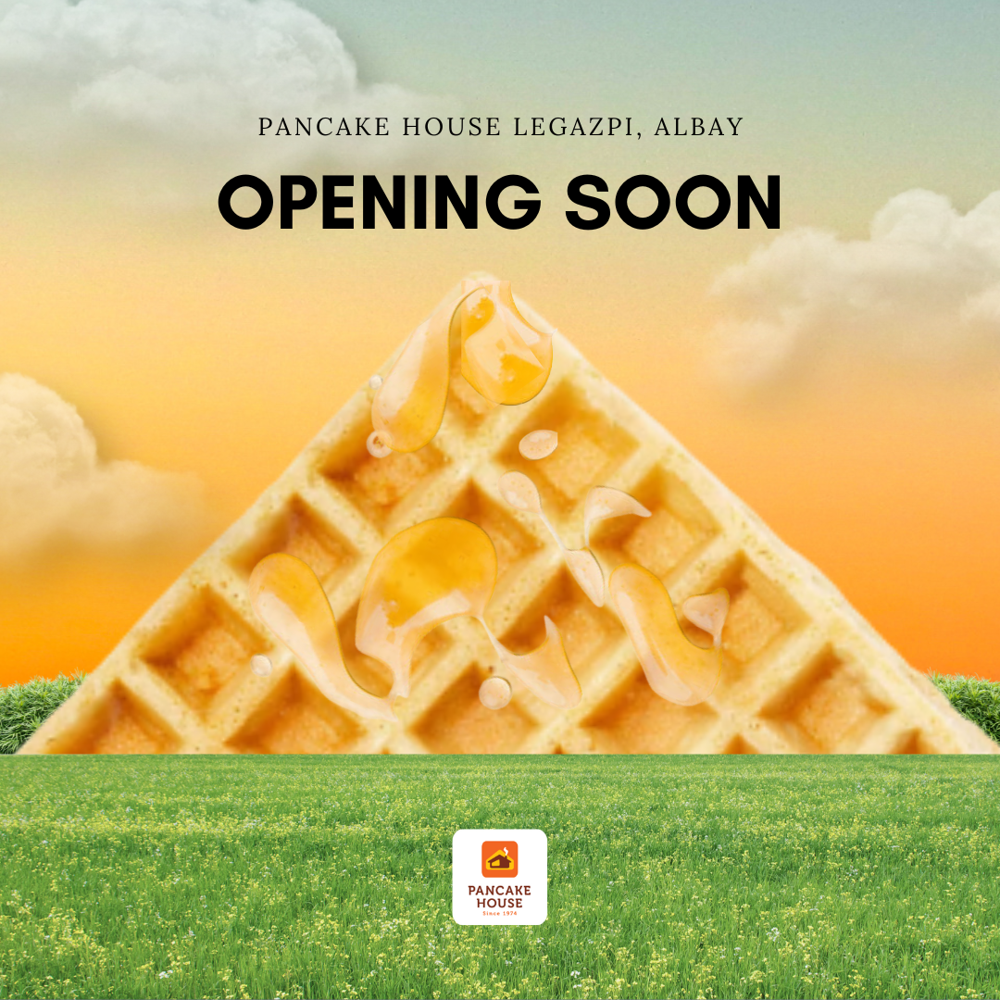
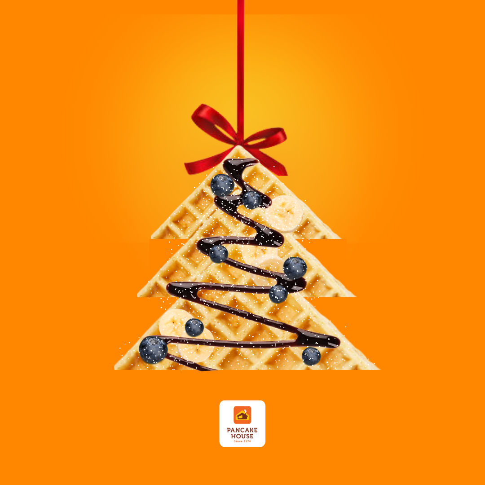
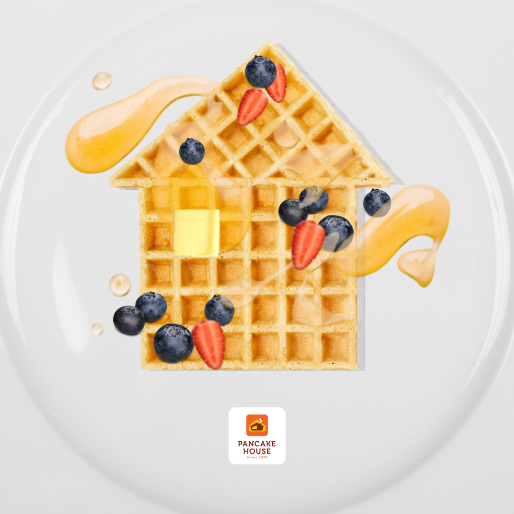

Skills
After studying multimedia arts for a couple of years in high school and in college, I've learned how to be versatile with many art mediums and genres. My greatest areas of expertise are in photography, graphic design, and branding. The projects I worked on in college are listed below for your reference.
Photography

 

These photos were taken for our photography class, wherein we had to demonstrate an effective use of lighting, shadows, and the camera's settings.
Graphic Design
   These posters were made as a way to assess and put into practice our ability to communicate effectively through the arts.
Branding
   These advertisements for the brand Pancake House were made as a way to assess and put into practice our ability to create effective and powerful marketing collateral.